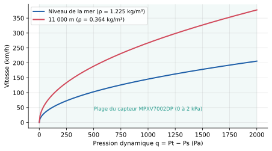
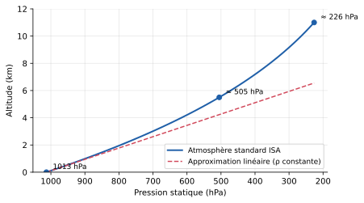
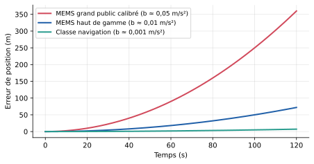
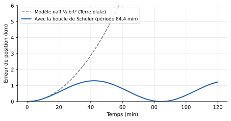
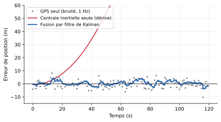

Conformément aux consignes, nous indiquons que ce rapport écrit a été rédigé avec l'aide d'un outil d'IA (assistant conversationnel Claude, Anthropic). L'IA a été utilisée pour :
Nous avons ensuite [à compléter par le binôme : relu, vérifié les calculs, réalisé le montage, ajouté nos propres mesures, reformulé telle ou telle partie…]. Les mesures expérimentales de la partie 4 et la présentation orale (PowerPoint) ont été réalisées par nous-mêmes, sans IA.
Un pilote de voiture regarde la route. Un pilote d'avion, lui, vole très souvent sans aucun repère visuel : de nuit, dans les nuages, au-dessus des océans. Dans ces conditions, l'oreille interne humaine est même trompeuse : un virage prolongé et bien coordonné peut être ressenti comme un vol en ligne droite (désorientation spatiale). L'avion doit donc mesurer lui-même, en permanence et de façon fiable, quatre grandeurs essentielles :
| Grandeur | Pourquoi c'est vital | Capteur principal |
|---|---|---|
| Vitesse par rapport à l'air | C'est elle qui crée la portance. Trop lent : décrochage. Trop rapide : dommages structuraux. | Sonde Pitot + prise statique |
| Altitude | Éviter le relief, respecter les niveaux de vol attribués par le contrôle aérien, atterrir. | Altimètre barométrique, radioaltimètre |
| Attitude (roulis, tangage, cap) | Savoir si l'avion penche, monte ou descend ; base du pilotage aux instruments et du pilote automatique. | Gyroscopes (centrale inertielle) |
| Position | Suivre la route prévue, éviter les autres avions, rejoindre la piste. | Centrale inertielle + GNSS + radiobalises |
Aucun capteur ne sait tout mesurer, et aucun n'est parfait. Un avion moderne combine donc plusieurs technologies issues de domaines très différents de la physique : la mécanique des fluides (Bernoulli), la physique de l'atmosphère (variation de la pression avec l'altitude), la mécanique du point (lois de Newton, force de Coriolis), l'optique (effet Sagnac dans les gyrolasers) et les ondes électromagnétiques (radioaltimètre, GPS). Les mesures sont ensuite fusionnées par calcul et triplées pour la sécurité.
L'enjeu est d'abord sociétal : plusieurs accidents majeurs ont eu pour origine une mesure fausse (vol AF447 en 2009, Birgenair 301 en 1996, Boeing 737 MAX en 2018-2019). Il est aussi technologique : les mêmes capteurs, miniaturisés sous forme de MEMS, équipent aujourd'hui nos smartphones, les drones et les voitures.
On classe les capteurs de navigation en trois familles : l'anémobarométrie (mesures liées à l'air qui entoure l'avion), la navigation inertielle (mesures du mouvement propre de l'avion, sans référence extérieure) et la radionavigation (mesures à partir de signaux radio émis par des satellites ou des balises au sol).
La sonde Pitot (inventée par Henri Pitot en 1732) est un petit tube orienté vers l'avant, placé sous le nez de l'avion, hors de la couche d'air perturbée par le fuselage. L'air qui entre dans le tube est arrêté : toute son énergie cinétique se transforme en pression. Le tube mesure donc la pression totale Pt (ou pression d'arrêt).
Sur le flanc du fuselage, de petits orifices percés perpendiculairement à l'écoulement (les prises statiques) mesurent la pression de l'air « au repos », sans effet de la vitesse : la pression statique Ps. Elles sont placées des deux côtés de l'avion pour compenser les erreurs en dérapage.
Pour un fluide incompressible, parfait, en écoulement permanent, la charge est conservée le long d'une ligne de courant. Entre un point loin en amont (pression Ps, vitesse v) et le point d'arrêt dans le tube (pression Pt, vitesse nulle) :
Ps + ½ ρ v² = Pt ⟹ q = Pt − Ps = ½ ρ v² ⟹ v = √(2q / ρ)(1)
q est la pression dynamique (en Pa), ρ la masse volumique de l'air (kg/m³). Application numérique : à 250 km/h (69,4 m/s) au niveau de la mer (ρ = 1,225 kg/m³), q = ½ × 1,225 × 69,4² ≈ 2 950 Pa ≈ 29,5 hPa, soit seulement 3 % de la pression atmosphérique. Le capteur doit donc être précis.
Au-delà d'environ Mach 0,3, la compressibilité de l'air n'est plus négligeable. On utilise alors la relation de Barré de Saint-Venant (écoulement isentropique, γ = 1,4), qui permet aussi de calculer le nombre de Mach, indispensable pour les avions de ligne qui volent vers Mach 0,8 :
qc / Ps = (1 + 0,2 M²)3,5 − 1(2)

La formule (1) montre que la vitesse dépend de ρ, qui diminue avec l'altitude (environ 3,4 fois plus faible à 11 km). Les instruments étant étalonnés avec ρ0 = 1,225 kg/m³, on distingue plusieurs vitesses :
| Sigle | Nom | Définition et usage |
|---|---|---|
| IAS | Indicated Air Speed (vitesse indiquée) | Lecture brute de l'anémomètre (étalonné avec ρ0). C'est ce que « ressent » l'aile : la vitesse de décrochage est fixe en IAS, quelle que soit l'altitude. |
| CAS | Calibrated Air Speed | IAS corrigée des erreurs d'installation (position des prises, incidence). |
| EAS | Equivalent Air Speed | CAS corrigée de la compressibilité de l'air (importante à grande vitesse). |
| TAS | True Air Speed (vitesse vraie) | Vitesse réelle par rapport à l'air : TAS = EAS × √(ρ0/ρ). À 11 km, TAS ≈ 1,8 × EAS. Sert à la navigation. |
| GS | Ground Speed (vitesse sol) | TAS + vent (composition vectorielle). Fournie par le GPS ou la centrale inertielle ; sert à calculer l'heure d'arrivée. |
La pression atmosphérique diminue avec l'altitude car il y a de moins en moins d'air « au-dessus ». La loi de l'hydrostatique s'écrit dP = −ρ g dh. Près du sol, ρg ≈ 12 Pa/m, donc 1 hPa correspond à environ 8,3 m (les pilotes retiennent « 1 hPa ≈ 28 ft »). En altitude, l'air étant moins dense, il faut monter davantage pour perdre 1 hPa.
Pour pouvoir étalonner tous les altimètres de la même façon, l'OACI a défini l'atmosphère standard internationale (ISA) : au niveau de la mer, P0 = 1013,25 hPa, T0 = 15 °C, puis une température qui décroît de 6,5 °C par kilomètre jusqu'à 11 km. En intégrant la loi de l'hydrostatique avec la loi des gaz parfaits, on obtient :
h = (T0 / L) · [ 1 − (P / P0)R·L/g ] ≈ 44 330 m × [ 1 − (P / 1013,25)0,1903 ](3)
avec L = 0,0065 K/m, R = 287 J/(kg·K), g = 9,81 m/s². L'altimètre est donc simplement un baromètre gradué en pieds, relié aux prises statiques : autrefois une capsule anéroïde (boîte métallique sous vide qui se déforme), aujourd'hui un capteur électronique dans le calculateur de données air.

Les calages altimétriques. La pression au sol varie avec la météo (de 980 à 1040 hPa environ). Sans correction, une dépression de 20 hPa fausserait l'altitude affichée de 160 m ! Le pilote règle donc la pression de référence de l'altimètre :
Le variomètre mesure la vitesse verticale à partir de la variation de la pression statique au cours du temps (dP/dt), via une fuite calibrée ou par dérivation numérique.
Près du sol, ce n'est pas l'altitude au-dessus de la mer qui compte, mais la hauteur réelle au-dessus du terrain. Le radioaltimètre émet une onde radio vers le bas, dans la bande réservée 4,2 – 4,4 GHz, et analyse l'écho réfléchi par le sol. La plupart utilisent la technique FMCW (onde continue modulée en fréquence) : la fréquence émise varie linéairement avec une pente α (Hz/s). Quand l'écho revient après un temps τ = 2h/c, la fréquence émise a changé de Δf = α·τ. En mesurant ce battement Δf :
h = c · Δf / (2 α)(4)
Il est précis à quelques dizaines de centimètres et fonctionne typiquement jusqu'à 2 500 ft (≈ 760 m). Il est indispensable pour l'atterrissage automatique, les alarmes de proximité du sol (GPWS/TAWS) et les annonces « fifty, forty, thirty… » à l'arrondi.
Une centrale inertielle (IMU, Inertial Measurement Unit, ou IRS, Inertial Reference System) contient trois accéléromètres et trois gyromètres montés selon trois axes perpendiculaires. Le principe est celui d'un passager qui, les yeux fermés, devinerait où il se trouve en sentant chaque accélération et chaque virage :
v(t) = v0 + ∫ a dt ; x(t) = x0 + ∫ v dt(5)
Son avantage majeur est d'être totalement autonome : elle n'a besoin d'aucun signal extérieur, ne peut pas être brouillée et fournit des mesures à haute fréquence (50 à 400 Hz). C'est pourquoi elle reste le cœur de la navigation des avions, des sous-marins et des fusées. Dans les centrales modernes dites à composants liés (strapdown), les capteurs sont fixés directement à la structure et c'est le calculateur qui fait les changements de repère.
Un accéléromètre est, dans son principe, une masse d'épreuve suspendue à un ressort : lorsque le boîtier accélère, la masse « reste en arrière » par inertie et le ressort se déforme d'une quantité x = m·a/k (loi de Hooke + 2e loi de Newton). Dans un accéléromètre MEMS (Micro-Electro-Mechanical System), la masse est une structure de silicium en forme de peigne, de quelques centaines de micromètres ; son déplacement fait varier l'écart entre des électrodes interdigitées, donc une capacité, mesurée électroniquement. Remarque importante : un accéléromètre au repos mesure +1 g vers le haut (il mesure la « force spécifique », non l'accélération cinématique), ce qui permet aussi de connaître l'inclinaison par rapport à la verticale.
Dans un gyromètre MEMS, une micro-masse est mise en vibration permanente (quelques kHz) selon un axe. Si le capteur tourne à la vitesse angulaire Ω, la masse, qui a une vitesse v dans le repère tournant, subit la force de Coriolis :
Fc = −2 m Ω ∧ v(6)
Cette force est perpendiculaire à la vibration : elle fait osciller la masse selon un second axe, avec une amplitude proportionnelle à Ω. Ce petit mouvement secondaire est détecté de façon capacitive. Ces capteurs sont très bon marché (quelques euros), minuscules et peu gourmands, mais leur dérive est importante (de 1 à plus de 100 °/h). Ils équipent les smartphones, les drones, l'aviation légère et les instruments de secours.
Dans un gyrolaser (RLG, Ring Laser Gyro), une cavité en forme de triangle ou de carré contient un gaz (hélium-néon) excité qui produit deux faisceaux laser tournant en sens opposés. Si la cavité tourne, le faisceau qui va dans le sens de la rotation doit parcourir un chemin un peu plus long que l'autre : c'est l'effet Sagnac (1913). Dans une cavité résonante, la différence de chemin se traduit par une différence de fréquence entre les deux faisceaux :
Δf = (4A / λ·P) · Ω(7)
A : aire de la cavité, P : périmètre, λ : longueur d'onde.
La différence de fréquence est mesurée par les franges d'interférence qui défilent sur un photodétecteur : chaque frange correspond à un petit angle de rotation (le gyrolaser est donc directement un capteur d'angle numérique). À faible vitesse de rotation, les deux faisceaux ont tendance à se « verrouiller » sur la même fréquence (lock-in) ; on fait donc vibrer mécaniquement la cavité (dithering). Le gyroscope à fibre optique (FOG) exploite le même effet Sagnac, mais dans une bobine de plusieurs centaines de mètres de fibre, sans gaz ni pièce mobile.
Ces capteurs atteignent une dérive de l'ordre de 0,01 °/h, ce qui donne une erreur de position d'environ 1 à 2 km par heure de vol. Ils équipent les avions de ligne (Airbus, Boeing), mais coûtent des dizaines de milliers d'euros.
| Technologie | Principe | Dérive typique du gyromètre | Prix indicatif | Usage |
|---|---|---|---|---|
| MEMS grand public | Coriolis sur masse vibrante | 10 à 100 °/h et plus | < 10 € | Smartphone, manette, drone de loisir |
| MEMS tactique | Coriolis, électronique compensée | 1 à 10 °/h | 100 à 5 000 € | Drones pro, aviation légère, secours |
| Fibre optique (FOG) | Sagnac en fibre | 0,001 à 1 °/h | 5 000 à 100 000 € | Hélicoptères, navires, missiles |
| Gyrolaser (RLG) | Sagnac en cavité laser | ≈ 0,01 °/h et moins | > 50 000 € | Avions de ligne, avions militaires |
Ordres de grandeur d'après [4], [5], [18] ; les valeurs varient fortement selon les modèles.
Aucun capteur n'est parfait : il présente toujours un petit biais b (une erreur constante). Or ce biais est intégré deux fois :
erreur de vitesse = b · t ; erreur de position = ½ · b · t²(8)
L'erreur grandit avec le carré du temps. Avec un biais de seulement 0,01 m/s² (1/1000e de g), on obtient 72 m après 2 minutes et, si l'on extrapole naïvement, ½ × 0,01 × 3600² ≈ 65 km après une heure. Pire : une erreur d'angle δθ due au gyromètre fait « voir » une fraction g·δθ de la gravité comme une accélération horizontale. Une erreur d'à peine 0,06° équivaut déjà à un biais de 0,01 m/s².

Une subtilité : l'oscillation de Schuler. Sur une Terre ronde, l'erreur ne grandit pas indéfiniment en t². Quand la centrale se croit déplacée d'une distance δx, elle croit aussi que la verticale locale a tourné de δx/R (R = rayon terrestre) et elle « corrige » la gravité en conséquence : cela crée une force de rappel. L'erreur oscille alors comme un pendule de longueur R, avec la période de Schuler T = 2π√(R/g) ≈ 84,4 minutes. L'erreur due au biais d'accéléromètre reste ainsi bornée (figure 7) ; c'est surtout la dérive des gyromètres qui fait croître l'erreur sur les longs vols, d'où l'intérêt des gyrolasers.

Chaque satellite embarque une horloge atomique et diffuse en permanence l'heure exacte d'émission de son signal et sa position. Le récepteur mesure le temps de trajet τ et en déduit la distance d = c·τ (la « pseudo-distance »). Comme la lumière parcourt 30 cm en une nanoseconde, la mesure du temps doit être extrêmement précise. Avec quatre satellites, on résout quatre inconnues : les trois coordonnées (x, y, z) et le décalage de l'horloge du récepteur. La vitesse est obtenue par effet Doppler, avec une précision de l'ordre de 0,1 m/s.
Le GNSS a deux qualités qui manquent à la centrale inertielle : il ne dérive pas et donne une position absolue (quelques mètres, moins d'un mètre avec les augmentations SBAS comme EGNOS). Mais ses signaux arrivent sur Terre avec une puissance infime (environ 10−16 W), ce qui les rend vulnérables au brouillage et au leurrage (envoi de faux signaux), et il ne fournit qu'une mesure par seconde environ (1 à 10 Hz).
Les points forts et les points faibles de la centrale inertielle et du GPS sont exactement complémentaires :
| Centrale inertielle | GNSS | |
|---|---|---|
| Points forts | Autonome, impossible à brouiller, très réactive (100 Hz et plus), précise à court terme, donne l'attitude | Ne dérive pas, position absolue, précise à long terme |
| Points faibles | Dérive avec le temps | Brouillable, signal parfois masqué, bruité, lent (1 à 10 Hz), pas d'attitude |
Le filtre de Kalman (R. Kalman, 1960, utilisé dès le programme Apollo) est l'algorithme qui réalise cette fusion de façon optimale. Il fonctionne en deux étapes répétées en boucle :
x̂ ← x̂ + K · (xGPS − x̂)(9)
Le gain de Kalman K (entre 0 et 1) est calculé automatiquement : il est grand si la prédiction est devenue incertaine, petit si le GPS est bruité. L'incertitude diminue après la correction.Le filtre estime en plus les biais des capteurs eux-mêmes, ce qui permet de corriger la centrale en continu. Si le GPS est brouillé, la centrale, déjà bien recalée, continue seule pendant un moment avec une dérive lente : c'est le principe de l'hybridation.

gen_figures.py.Sur les Airbus A320, A330 et A350, les données air et inertielles sont regroupées dans des calculateurs appelés ADIRU (Air Data and Inertial Reference Unit). Chaque ADIRU comporte deux parties :
Les données sont transmises aux écrans, au pilote automatique et aux commandes de vol électriques par des bus numériques normalisés (ARINC 429). Un calculateur de navigation (FMS) fusionne ensuite IR, GNSS et radiobalises.
Le vote majoritaire. Tout est au minimum triplé : trois sondes Pitot, plusieurs prises statiques, trois ADIRU, alimentations séparées. Les calculateurs de commandes de vol comparent en permanence les trois valeurs et utilisent la médiane : si une valeur s'écarte trop des deux autres pendant un certain temps, elle est déclarée fausse et écartée. Exemple : 250 kt, 251 kt et 180 kt → la troisième sonde est rejetée.
Le vote fonctionne si une seule source tombe en panne. Mais si une même cause touche toutes les sondes en même temps (givrage, cendres volcaniques, ruban adhésif oublié après un nettoyage comme sur le vol Aeroperú 603 en 1996), les trois valeurs peuvent être fausses — voire fausses de la même manière, et le système ne peut plus détecter l'erreur. C'est exactement ce qui s'est produit sur le vol AF447. À l'inverse, le Boeing 737 MAX montre le danger d'un système critique (MCAS) qui n'utilisait qu'une seule sonde d'incidence : une sonde défaillante a suffi à provoquer deux accidents (Lion Air 610 en 2018, Ethiopian 302 en 2019).
Un capteur ne peut être installé sur un avion qu'après une certification très stricte (EASA en Europe, FAA aux États-Unis). Les principales normes, publiées par la RTCA et l'EUROCAE, sont :
| Norme | Domaine | Contenu |
|---|---|---|
| DO-160G (ED-14G) | Environnement des équipements | Essais en température (−55 °C à +70 °C et plus), altitude, humidité, vibrations, chocs, foudre, compatibilité électromagnétique, givrage, sable, fluides… |
| DO-178C (ED-12C) | Logiciel embarqué | Niveaux DAL A à E selon la gravité d'une panne. Un logiciel de niveau A (panne catastrophique) exige une traçabilité totale des exigences et des tests couvrant chaque condition du code. |
| DO-254 (ED-80) | Électronique complexe | Équivalent de DO-178C pour les circuits programmables (FPGA, ASIC). |
| ARP4754A / ARP4761 | Systèmes et sécurité | Méthodes d'analyse de sécurité : une panne catastrophique doit avoir une probabilité inférieure à 10−9 par heure de vol, d'où la redondance. |
| ARINC 429 | Bus de données | Transmission numérique unidirectionnelle des données capteurs (mots de 32 bits). |
Le vol Air France 447 reliait Rio de Janeiro à Paris avec un Airbus A330-203. En croisière au niveau 350 (environ 10 700 m), de nuit, au-dessus de l'Atlantique, l'avion traverse une zone de nuages convectifs (pot-au-noir) contenant de nombreux cristaux de glace. Le rapport final du BEA [1] décrit l'enchaînement suivant :
Suites : remplacement des sondes Pitot sur les A330/A340, durcissement des normes de certification au givrage par cristaux de glace, formation renforcée des pilotes au décrochage en haute altitude, et développement de fonctions de détection automatique de vitesse erronée et de calcul de vitesse de secours.
Pour illustrer concrètement les principes étudiés, nous proposons de réaliser une mini-centrale regroupant les trois familles de capteurs, à partir de modules bon marché utilisés en modélisme et sur les drones. Le programme Arduino est fourni en annexe numérique (montage/mini_centrale/mini_centrale.ino) et envoie les mesures sur le port série au format CSV.
| Module | Rôle « avion » | Caractéristiques | Liaison |
|---|---|---|---|
| Arduino Uno (ou Nano) | Calculateur (ADIRU) | ATmega328P, ADC 10 bits, 5 V | — |
| MPU6050 (ou BNO055) | Centrale inertielle | Accéléromètre 3 axes ±2 g (16 384 LSB/g), gyromètre 3 axes ±250 °/s (131 LSB/(°/s)) | I²C, adresse 0x68 |
| BMP280 | Altimètre barométrique | 300 à 1100 hPa, précision relative ±0,12 hPa (≈ ±1 m) | I²C, adresse 0x76 |
| Kit Pitot + MPXV7002DP | Anémomètre | Capteur différentiel ±2 kPa, sortie 0,5–4,5 V, sensibilité 1 V/kPa | Entrée analogique A0 |
| GPS NEO-6M (option) | GNSS | Position ≈ 2,5 m, vitesse ≈ 0,1 m/s, 1 Hz | Série (broches 4/3) |
Attention : le MPXV7002DP doit être alimenté en 5 V (son entrée et sa sortie ne conviennent pas directement à un ESP32 en 3,3 V, sauf pont diviseur). Vérifier que le module BMP280 accepte 5 V ; sinon l'alimenter en 3,3 V.
| Expérience | Protocole | Résultat attendu (théorie) |
|---|---|---|
| A. Dérive inertielle | Poser la centrale immobile sur une table. Enregistrer pendant 2 minutes la vitesse et la position obtenues par double intégration, puis la même chose pour l'angle obtenu par le gyromètre seul. Recommencer après calibration (soustraction du biais moyen). | Position qui croît en ½bt² (figure 6) : plusieurs dizaines à centaines de mètres en 2 min alors que le capteur n'a pas bougé. L'angle du gyromètre dérive linéairement ; le filtre complémentaire reste stable. |
| B. Altimètre | Relever la pression et l'altitude calculée à chaque étage d'un bâtiment (hauteur d'étage mesurée au mètre ruban), ou entre le bas et le haut d'une colline dont l'altitude est donnée par la carte IGN. | ≈ −0,12 hPa par mètre près du sol, soit ≈ −0,36 hPa par étage de 3 m. Résolution ≈ 1 m. |
| C. Pitot | Placer la sonde face à un ventilateur ou un sèche-cheveux à différentes distances / vitesses. Mesurer en même temps la vitesse avec un anémomètre à hélice de référence. Tracer vPitot en fonction de vanémomètre, et q en fonction de v². | Relation q = ½ρv² (droite en fonction de v²). Faible sensibilité aux basses vitesses : 1 pas de l'ADC (≈ 4,9 Pa) correspond à 2,8 m/s près de zéro. |
| D. GPS (option) | Marcher en ligne droite dans une cour en enregistrant GPS et centrale. Comparer vitesse sol GPS et vitesse intégrée par l'IMU. | GPS bruité mais sans dérive ; IMU lisse mais qui dérive (figure 8). |
Insérer ici les courbes obtenues avec le montage (export CSV du moniteur série, puis tracé avec le script montage/tracer_mesures.py, un tableur ou Python) : (A) position et angle dérivés en fonction du temps ; (B) altitude mesurée en fonction de la hauteur réelle ; (C) vitesse Pitot en fonction de la vitesse de l'anémomètre de référence. Commenter les écarts avec la théorie (figures 3, 2 et 6) et estimer les incertitudes.
| Étage / point | Hauteur réelle (m) | Pression mesurée (hPa) | Altitude calculée (m) | Écart (m) |
|---|---|---|---|---|
| RDC | 0 | |||
| 1er | ||||
| 2e | ||||
| 3e |
| Point | v anémomètre (m/s) | Tension A0 (V) | q (Pa) | v Pitot (m/s) | Écart (%) |
|---|---|---|---|---|---|
| 1 | |||||
| 2 | |||||
| 3 | |||||
| 4 |
| Capteur | Limite | Exemple / conséquence |
|---|---|---|
| Sondes Pitot et statiques | Givrage (cristaux de glace), obstruction par des insectes, cendres volcaniques, protections oubliées au sol | AF447 (2009), Birgenair 301 (1996, nid d'insectes probable dans une sonde Pitot), Aeroperú 603 (1996, prises statiques couvertes) |
| Sondes d'incidence | Blocage mécanique, défaut de calibration | Boeing 737 MAX (2018-2019) |
| Altimètre barométrique | Erreur de calage, erreurs par grand froid (air plus dense, l'avion est plus bas qu'affiché) | Procédures de correction « temps froid » en approche |
| Radioaltimètre | Interférences avec les réseaux 5G en bande C (3,7–3,98 GHz, proche de 4,2 GHz) | Restrictions d'exploitation aux États-Unis en 2022, remplacement de filtres |
| Centrale inertielle | Dérive, alignement initial au sol de plusieurs minutes, coût élevé des gyrolasers | Recalage indispensable par GNSS ou radiobalises |
| GNSS | Brouillage et leurrage, en forte augmentation depuis 2022 (mer Baltique, Méditerranée orientale, Moyen-Orient) | Bulletins d'alerte EASA [19] ; perte de position ou position fausse, alarmes de terrain intempestives |
Un avion « sait » où il est et à quelle vitesse il vole grâce à la combinaison de plusieurs capteurs fondés sur des principes physiques très différents : la sonde Pitot et la loi de Bernoulli donnent la vitesse par rapport à l'air ; la pression statique et le modèle d'atmosphère standard donnent l'altitude ; la centrale inertielle, par l'intégration des accélérations et des rotations (force de Coriolis, effet Sagnac), donne l'attitude et le déplacement ; le GNSS et les radiobalises corrigent la dérive. Le tout est fusionné par un filtre de Kalman et triplé pour la sécurité, selon des normes de certification très exigeantes.
L'accident du vol AF447 montre pourtant qu'un simple tube obstrué par de la glace peut suffire à déclencher une catastrophe lorsque tous les capteurs redondants tombent en panne de la même façon et que l'humain doit reprendre la main. L'avenir de la navigation aérienne passe donc par la diversité des technologies (anémométrie laser, vitesse calculée par modèle, capteurs quantiques) plutôt que par la simple multiplication de capteurs identiques, et par une meilleure résistance au brouillage du GPS. Ces mêmes principes se retrouvent aujourd'hui dans les drones, les voitures autonomes et nos smartphones : comprendre les capteurs d'un avion, c'est comprendre la navigation de demain.
Références au format IEEE. À vérifier et compléter par le binôme (dates de consultation des sites web).